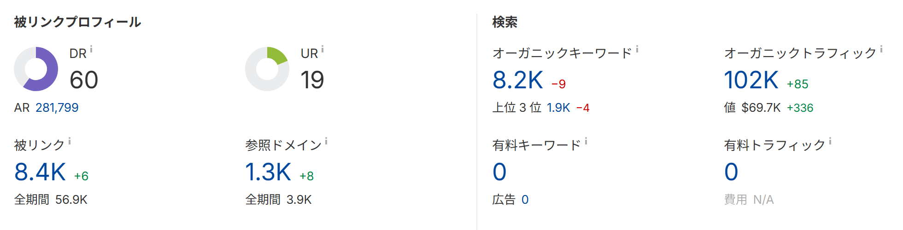

🕒 学習目安 約20分
SEO分析・KPI
KPI：重要指標、改善：優先順位、記録：長期データ保存とBigQuery連携、モニタリング：被リンク・異常検知
5 / 6
モニタリング：被リンク状況の継続的な把握と異常検知
KPIのモニタリングは、順位・流入・CVといった数値が中心になりがちですが、被リンクの状況を継続的に把握することも、サイト外部からの評価を可視化する上で重要です。
Term / 用語定義
被リンクモニタリング
どんなサイトのどんなページから、どのくらいの被リンクを獲得しているかを継続的に確認すること。被リンクは蓄積される資産ではなく、現時点での外部評価を映す指標であるため、定期的な確認が必要とされる。
被リンクの分析には、Search Consoleの「リンク」レポート（外部リンク・内部リンク）を基本として使います。定期的にエクスポートしてデータを蓄積することで、新しく獲得したリンクの傾向（どんなページ・コンテンツにリンクが付きやすいか）を把握でき、コンテンツ強化やSNS発信の施策につなげられます。サードパーティツールを併用すれば、競合サイトとの被リンク状況の比較や、失われたリンクの把握も可能です。

図：サードパーティツールで被リンクの評価指標（ドメイン評価・被リンク数・参照ドメイン数など）を継続的に確認した例。増減の差分から異常にも気付ける
また、順位や流入の急落を見落とさないためには、異常検知の仕組みをあらかじめ整えておくことも有効です。GA4の「カスタムインサイト」やLooker Studioの「グラフのアラート」機能を使うと、特定の条件（例：特定ページのセッション数が一定割合以上低下）に合致した際に通知を受け取れます。
📝
Note
順位データや検索クエリの傾向も、長期間保存しておくことで、新たに発生したキーワードや、逆に消滅したキーワードに気付きやすくなります。季節性のあるキーワードでは、需要が高まり始めるタイミングが年々変化することもあり、長期データがあって初めて見えてくる傾向も少なくありません。